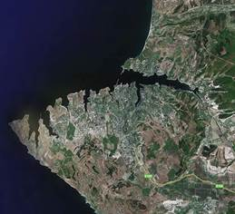
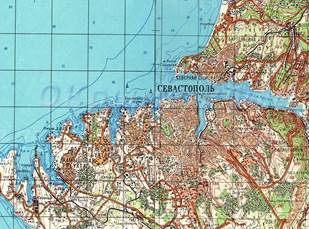
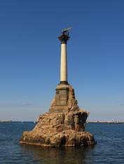
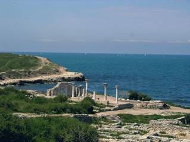
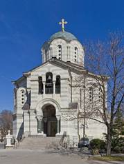
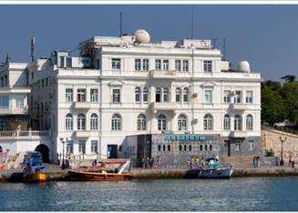

Путеводитель по Севастополю
Правительство Севастополя Официальный портал органов государственной власти. sev.gov.ru
Дополнительные информационные ресурсы посвященные Севастополю:
– Мой Севастополь sevastravel.ru
– Полезные ссылки - сайты о Севастополе http://virtual-sevastopol.ru
– Достопримечательности города Севастополя https://sevastopol.org
– Севастополь 2025, Крым – все о городе https://wikiway.com/russia/sevastopol/
Общие сведения о городе
Город-Герой Севастополь – морская крепость Юга России. Севастополь сегодня – главная военно-морская база Черноморского флота, крупный незамерзающий морской торговый, рыбный порт, развивающийся промышленный, научно-технический, культурно-исторический и рекреационный центр российского Причерноморья.
С момента своего официального основания в 1783 году Севастополь практически всегда имел особый статус, определенный его предназначением как главной базы флота. Этот статус по форме менялся, но суть всегда сохранялась. По Конституции Российской Федерации в настоящее время Севастополь – город федерального значения, отдельный субъект Федерации.
Площадь Севастополя – около 107,96 тыс. га (1080 кв. км), из них 21,6 тыс. га – акватория бухт, 86,36 тыс. га – суша. Около 30% территории является заповедной. Городская площадь занимает 19 тыс. га, под промышленными предприятиями и жилыми застройками – 17 тыс. га, сельхозугодьями – 35 тыс. га. Общая численность жителей по данным оперативно проведённой переписи 2014 года – 395 тыс. человек, по данным переписи 2021 года – 547 тыс. человек. Городское население составляет 92,2%, сельское – 7,8%.
Карта города, вид со спутника

Историческая справка
Из-за удачного географического положения территории Севастополя привлекали внимание поселенцев с древнейших времен. В эпоху Античности греки основали здесь легендарный Херсонес, а в начале нашей эры земли Акъяра (раннее название города) перешли к римлянам, которые спустя несколько столетий неохотно уступили их Византии. Удерживать за собой черноморское побережье византийским императорам удавалось недолго, поэтому в XV веке территорию порта поделили между собой татарские кочевники, осевшие на полуострове генуэзцы и правители православного княжества Феодоро.
С 1475 по 1774 год Акъяр входил в состав Османской империи и отошел к России только после подписания турками Кючук-Кайнарджийского договора. А в 1804 году город официально объявили главным черноморским портом страны.
В 1853 году началась Крымская война, в которой Севастополь сыграл ключевую роль. Героическая оборона города длилась 349 дней, в ходе которой он был практически разрушен. В последствии Севастополь потерял стратегическое значение, но стал крупным центром туризма. Возрождение российского Черноморского флота произошло в ходе Русско-турецкой войны 1877—1878 гг.
Во время Великой Отечественной войны оборона Севастополя длилась 250 дней. Но все же город был захвачен немецкими войсками и освобождён 9 мая 1944 года. После были долгие годы восстановления города. До 70-х годов 20 века Севастополь был закрытым городом.
|
Достопримечательности города |
|
|
 |
Монумент является символом города. Был возведён в 1905 году к 50-летию Первой обороны Севастополя. В 1854 году на этом месте были затоплены русские парусные корабли, чтобы перекрыть вход неприятельским судам в бухту и тем самым спасти Севастополь. |
|
 |
Херсонес Таврический - древнегреческий город, который просуществовал 2 тыс. лет, а сейчас это музей под открытым небом. Сегодня в общественном сознании древний город Херсонес неразрывно связан с крещением киевского князя Владимира. |
|
|
Малахов курган - cтратегическая точка обороны Севастополя, его высота составляет 97 метров над уровнем моря. В память о героях установлено сооружение из белого мрамора. Чугунные пушки олицетворяют Крымскую войну - оккупацию 1854-55 годов. |
|
 |
Владимирский собор. Усыпальница Адмиралов. Это одно купольные сооружение, высота которого составляет более тридцати метров. На нижнем уровне храма покоятся адмирал Нахимов, Истомин, Лазарев и другие герои Крымской войны. |
|
 |
Аквариум (музей институт биологии южных морей) является самым большим аквариумом в Крыму, где обитают более 1000 видов морских существ. Так же на территории аквариума расположен небольшой музей редких животных и рыб. |

ТЕКСТ ГИМНА ГОРОДА СЕВАСТОПОЛЯ
(слова Петра Михайловича Градова)
Ты
лети, крылатый ветер,
Над морями, над землей,
Расскажи ты всем на свете
Про любимый город мой.
Всем
на свете ты поведай,
Как на крымских берегах
Воевали наши деды
И прославили в боях.
Легендарный
Севастополь,
Неприступный для врагов,
Севастополь, Севастополь —
Гордость русских моряков!
Здесь
на бой, святой и правый,
Шли за Родину свою
И твою былую славу
Мы умножили в бою.
Скинув
черные бушлаты,
Черноморцы в дни войны
Здесь на танки шли с гранатой,
Шли на смерть твои сыны.
Легендарный
Севастополь,
Неприступный для врагов,
Севастополь, Севастополь —
Гордость русских моряков!
Если
из-за океана
К нам враги придут с мечом,
Встретим мы гостей незваных
Истребительным огнем.
Знает
вся страна родная,
Что не дремлют корабли
И надежно охраняют
Берега родной земли.
Легендарный
Севастополь,
Неприступный для врагов,
Севастополь, Севастополь —
Гордость русских моряков!
Веб ссылка: https://yandex.ru/video/preview/5644339563516846950